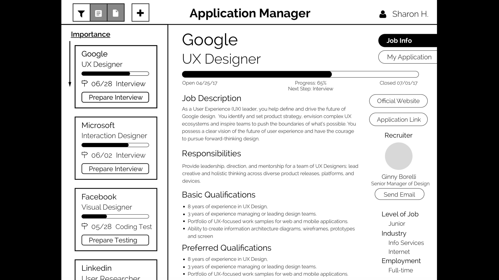
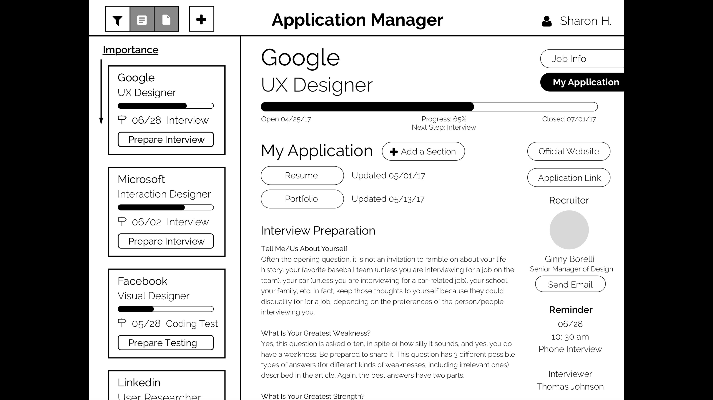
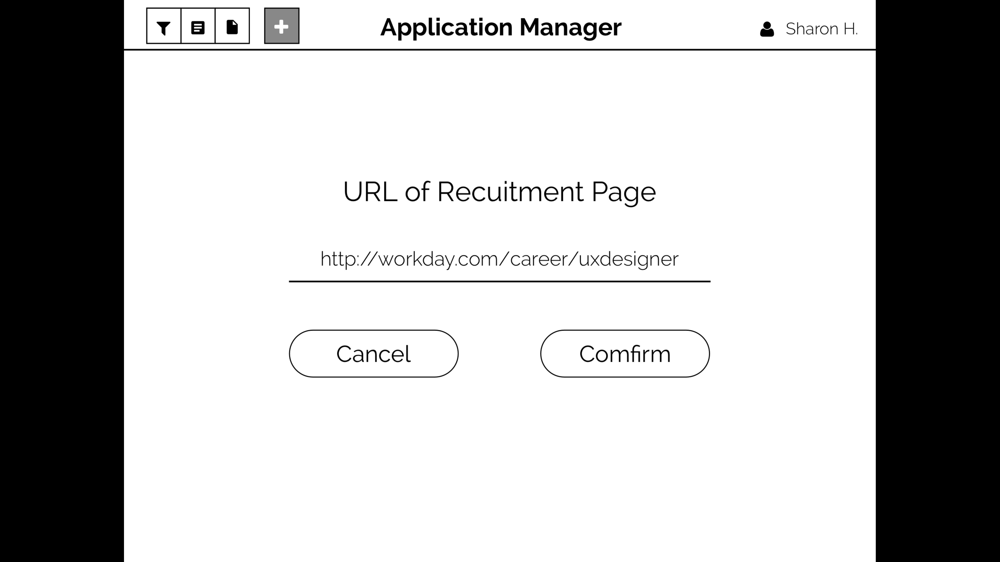
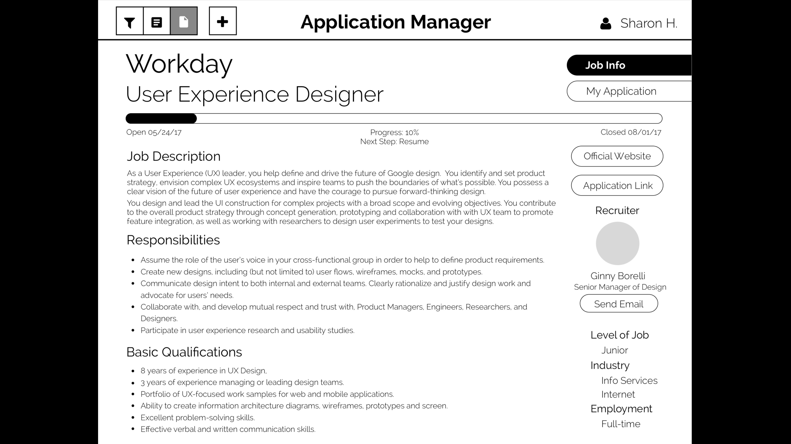

Task
Lead User Sharon Huang, a senior student studying Interaction Design in UC San Diego, is applying for full-time jobs starting from fall 2017. Using an app on desktop called Application Manager, she tries to keep track of her applications for Google, Facebook and Intuit and start a new application for Workday.
Domain
Management of Job Applications
Video Prototype
Pixel Prototype





